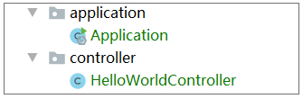

- 00 导读 5分钟轻松了解Spring基础知识.md.html
- 00 开篇词 贴心“保姆”Spring罢工了怎么办？.md.html
- 01 Spring Bean 定义常见错误.md.html
- 02 Spring Bean 依赖注入常见错误（上）.md.html
- 03 Spring Bean 依赖注入常见错误（下）.md.html
- 04 Spring Bean 生命周期常见错误.md.html
- 05 Spring AOP 常见错误（上）.md.html
- 06 Spring AOP 常见错误（下）.md.html
- 07 Spring事件常见错误.md.html
- 08 答疑现场：Spring Core 篇思考题合集.md.html
- 09 Spring Web URL 解析常见错误.md.html
- 10 Spring Web Header 解析常见错误.md.html
- 11 Spring Web Body 转化常见错误.md.html
- 12 Spring Web 参数验证常见错误.md.html
- 13 Spring Web 过滤器使用常见错误（上）.md.html
- 14 Spring Web 过滤器使用常见错误（下）.md.html
- 15 Spring Security 常见错误.md.html
- 16 Spring Exception 常见错误.md.html
- 17 答疑现场：Spring Web 篇思考题合集.md.html
- 18 Spring Data 常见错误.md.html
- 19 Spring 事务常见错误（上）.md.html
- 20 Spring 事务常见错误（下）.md.html
- 21 Spring Rest Template 常见错误.md.html
- 22 Spring Test 常见错误.md.html
- 23 答疑现场：Spring 补充篇思考题合集.md.html
- 导读 5分钟轻松了解一个HTTP请求的处理过程.md.html
- 知识回顾 系统梳理Spring编程错误根源.md.html
- 结束语 问题总比解决办法多.md.html
- 捐赠
知识回顾 系统梳理Spring编程错误根源
你好，我是傅健。
前面，我们介绍了50个各式各样的问题，在正式结束课程之前，我觉得有必要带着你去梳理下或者说复盘下问题出现的原因。错误的表现千万种，但是如果追根溯源的话，其实根源不会太多。
当然可能有的同学会把所有的问题都简单粗暴地归结为“学艺不精”，但是除了这个明显的原因外，我想你还是应该深入思考下，最起码，假设是Spring本身就很容易让人犯的错误，你至少是有意识的。那么接下来，我们就来梳理下关于Spring使用中常见的一些错误根源。
隐式规则的存在
要想使用好 Spring，你就一定要了解它的一些潜规则，例如默认扫描Bean的范围、自动装配构造器等等。如果我们不了解这些规则，大多情况下虽然也能工作，但是稍微变化，则可能完全失效，例如在第1课的案例1中，我们使用 Spring Boot 来快速构建了一个简易的 Web 版 HelloWorld：

其中，负责启动程序的 Application 类定义如下：
package com.spring.puzzle.class1.example1.application
//省略 import
@SpringBootApplication
public class Application {
public static void main(String[] args) {
SpringApplication.run(Application.class, args);
}
}
提供接口的 HelloWorldController 代码如下：
package com.spring.puzzle.class1.example1.application
//省略 import
@RestController
public class HelloWorldController {
@RequestMapping(path = "hi", method = RequestMethod.GET)
public String hi(){
return "helloworld";
};
}
但是，假设有一天，当我们需要添加多个类似的 Controller，同时又希望用更清晰的包层次结构来管理时，我们可能会去单独建立一个独立于 application 包之外的 Controller 包，并调整类的位置。调整后结构示意如下：

这样就会工作不起来了，追根溯源，你可能忽略了Sping Boot中@SpringBootApplication是有一个默认的扫描包范围的。这就是一个隐私规则。如果你原本不知道，那么犯错概率还是很高的。类似的案例这里不再赘述。
默认配置不合理
除了上述原因以外，还有一个很重要的因素在于，Spring默认的配置不见得是合理的。
你可以思考这样一个问题，如果让我们写一个框架，我们最大的追求肯定是让用户“快速上手”，这样才好推广。所以我们肯定不会去写一堆配置，而是采用默认值的方式。但是这里面你提出的默认值一定是用户需要的么？未必。这时候，你可能会妥协地满足80%的用户使用场景。所以在使用时，你一定要考虑自己是不是那多余的20%。
一起复习这样一个的案例，在第18课的案例2中，当我们什么都不去配置，而是直接使用 Spring Data Cassandra 来操作时，我们实际依赖了 Cassandra driver 内部的配置文件，具体目录如下：
.m2\repository\com\datastax\oss\java-driver-core\4.6.1\java-driver-core-4.6.1.jar!\reference.conf
我们可以看下它存在很多默认的配置，其中一项很重要的配置是 Consistency，在 driver 中默认为 LOCAL_ONE，具体如下：
basic.request {
# The consistency level.
#
# Required: yes
# Modifiable at runtime: yes, the new value will be used for requests issued after the change.
# Overridable in a profile: yes
consistency = LOCAL_ONE
//省略其他非关键配置
}
当你第一次学习和应用 Cassandra 时，你一定会先只装一台机器玩玩。此时，设置为 LOCAL_ONE 其实是最合适的，也正因为只有一台机器，你的读写都只能命中一台。这样的话，读写是完全没有问题的。
但是产线上的 Cassandra 大多都是多数据中心多节点的，备份数大于1。所以读写都用 LOCAL_ONE 就会出现问题。所以这样说，你就理解了我要表达的意思了吧？Spring采用了一堆默认配置有其原因，但不见得适合你的情况。
追求奇技淫巧
Spring给我们提供了很多易用的可能，然后有时候，你用着用着会觉得，Spring怎么用都能工作起来，特别是你在网上看到了一些更简洁高效的写法之后，你会觉得惊喜，原来这样也可以。但是Spring真的是无所不能地随意使用么？
这里让我们快速回顾下第9课的案例2，我们常常使用@RequestParam 和@PathVarible 来获取请求参数（request parameters）以及 path 中的部分。但是在频繁使用这些参数时，不知道你有没有觉得它们的使用方式并不友好，例如我们去获取一个请求参数 name，我们会定义如下：
@RequestParam(“name”) String name
此时，我们会发现变量名称大概率会被定义成 RequestParam值。所以我们是不是可以用下面这种方式来定义：
@RequestParam String name
这种方式确实是可以的，本地测试也能通过。这里我给出了完整的代码，你可以感受下这两者的区别：
@RequestMapping(path = "/hi1", method = RequestMethod.GET)
public String hi1(@RequestParam("name") String name){
return name;
};
@RequestMapping(path = "/hi2", method = RequestMethod.GET)
public String hi2(@RequestParam String name){
return name;
};
很明显，对于喜欢追究极致简洁的同学来说，这个酷炫的功能是一个福音。但当我们换一个项目时，有可能上线后就失效了，然后报错 500，提示匹配不上。
这个案例的原因，我就不复述了，我只是想说，通过这个案例，你要明白Spring虽然强大，看起来怎么都能玩转，但是实际并非一定如此。
理所当然地使用
在使用Spring框架时，有时候，我们会不假思索地随意下结论。例如，我们在处理HTTP Header遇到需要处理多个Header时，我们第一反映是使用一个HashMap来接收，但是会满足所有情况么？让我们快速回顾下第10课的案例1。
在 Spring 中解析 Header 时，我们在多数场合中是直接按需解析的。例如，我们想使用一个名为myHeaderName的 Header，我们会书写代码如下：
@RequestMapping(path = "/hi", method = RequestMethod.GET)
public String hi(@RequestHeader("myHeaderName") String name){
//省略 body 处理
};
定义一个参数，标记上@RequestHeader，指定要解析的 Header 名即可。但是假设我们需要解析的 Header 很多时，按照上面的方式很明显会使得参数越来越多。在这种情况下，我们一般都会使用 Map 去把所有的 Header 都接收到，然后直接对 Map 进行处理。于是我们可能会写出下面的代码：
@RequestMapping(path = "/hi1", method = RequestMethod.GET)
public String hi1(@RequestHeader() Map map){
return map.toString();
};
粗略测试程序，你会发现一切都很好。而且上面的代码也符合针对接口编程的范式，即使用了 Map 这个接口类型。但是上面的接口定义在遇到下面的请求时，就会超出预期。请求如下：
GET http://localhost:8080/hi1- myheader: h1- myheader: h2
这里存在一个 Header 名为 myHeader，不过这个 Header 有两个值。此时我们执行请求，会发现返回的结果并不能将这两个值如数返回。结果示例如下：
{myheader=h1, host=localhost:8080, connection=Keep-Alive, user-agent=Apache-HttpClient/4.5.12 (Java/11.0.6), accept-encoding=gzip,deflate}
实际上，要完整接收到所有的 Header，不能直接使用Map而应该使用MultiValueMap。
借着这个案例，可以思考下你为什么会出错？因为你肯定知道要用一个Map来接收，也相信一定可以，但是你可能疏忽了你用的Map是Spring给你返回的Map。所以有时候，一些“理所当然”的结论其实是错误的。一定要大胆假设、小心求证，才能规避很多问题。
无关的依赖变动
Spring依赖了大量的其他组件来协同完成功能，但是完成同一个功能的组件却可能存在多种工具，例如Spring完成JSON操作，既可以依赖Gson，也可以依赖Jackson。更可怕的是Spring往往是动态依赖的，即优先看看优选的工具是否存在，存在则用，不存在才看其他依赖的工具类型是否存在。这样的逻辑会导致项目的依赖不同时，依赖的工具也不同，从而引发一些微妙的行为“变化”。
我们可以快速复习下第11课的案例2，首先看下面这段代码：
@RestController
public class HelloController {
@PostMapping("/hi2")
public Student hi2(@RequestBody Student student) {
return student;
}
}
这段代码接收了一个 Student 对象，然后原样返回。我们使用下面的测试请求进行测试：
POST http://localhost:8080/springmvc3_war/app/hi2- Content-Type: application/json- {- “name”: “xiaoming”- }
经过测试，我们会得到以下结果：
{- “name”: “xiaoming”- }
但是随着项目的推进，在代码并未改变时，我们可能会返回以下结果：
- {- “name”: “xiaoming”,- “age”: null- }
即当 age 取不到值，开始并没有序列化它作为响应 Body 的一部分，后来又序列化成 null 作为 Body 返回了。
如果我们发现上述问题，那么很有可能是上述描述的依赖变动造成的。具体而言，在后续的代码开发中，我们直接依赖或者间接依赖了新的 JSON 解析器，例如下面这种方式就依赖了Jackson：
<dependency>
<groupId>com.fasterxml.jackson.core</groupId>
<artifactId>jackson-databind</artifactId>
<version>2.9.6</version>
</dependency>
诸如此类问题，一般不会出现严重的问题，但是你一定要意识到，当你的代码不变时，你的依赖变了，行为则可能“异常”了。
通用错误
实际上，除了上面的一些原因外，还有不少错误是所有类似Spring框架都要面对的问题。例如，处理一个HTTP请求，Path Variable 含有特殊字符/时，一般都会有问题，大多需要额外的处理。我们可以复习下第9课的案例1。
在解析一个 URL 时，我们经常会使用到@PathVariable 这个注解。例如我们会经常见到如下风格的代码：
@RestController
@Slf4j
public class HelloWorldController {
@RequestMapping(path = "/hi1/{name}", method = RequestMethod.GET)
public String hello1(@PathVariable("name") String name){
return name;
};
}
当我们使用 http://localhost:8080/hi1/xiaoming 访问这个服务时，会返回”xiaoming”，即 Spring 会把 name 设置为 URL 中对应的值。
看起来顺风顺水，但是假设这个 name 中含有特殊字符/时（例如 http://localhost:8080/hi1/xiao/ming ），会如何？如果我们不假思索，或许答案是”xiao/ming”？然而稍微敏锐点的程序员都会判定这个访问是会报错的。
这个案例其实你换别的HTTP服务框架也可能需要处理，这种问题就是一些通用的问题，并不是因为你使用Spring才出现的。
通过思考上述错误根源，其实你应该相信了，除了学艺不精之外，还有一部分原因在于我们的“武断”和Spring的好用。也正因为它的好用，让我们很少去思考它的内部运作机制，当我们大刀阔斧地到处使用Spring时，可能不小心就踩坑了。所以当你使用Spring时，不妨大胆假设、小心求证，多看看别人犯的错误，多总结总结最佳实践。这样才能一劳永逸，更加熟练和自信地使用Spring！
© 2019 - 2023 Liangliang Lee. Powered by gin and hexo-theme-book.